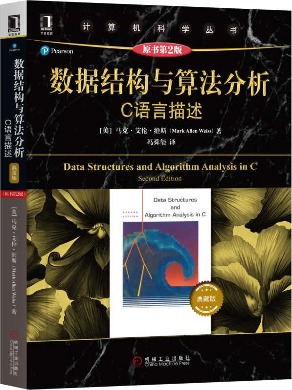

首页 > 书籍下载
《数据结构与算法分析(C语言描述)》原书第2版PDF下载（高清完整版）
|  | 作者：[美]马克·艾伦·维斯（Mark，Allen，Weiss） |
| 译者：冯舜玺 | |
| 出版时间：2019年04月01日 | |
| 出版社：机械工业出版社 | |
| 书号ISBN：9787111621959 | |
| 总页数：412 |
这是一本非常经典的数据结构和算法书籍，内容系统、全面，原书曾被评为 20 世纪顶尖的 30 部计算机著作之一，有超过 500 所大学选择它作为正式的教材。
这里提供的是《数据结构与算法分析C语言描述（原书第2版）》的高清 PDF 下载，内容完整，附带目录标签。
和同类的其它书籍相比，这本书有以下几点特别之处：
- 专门用一章的内容讨论算法设计的技巧，包括贪心算法、分治算法、动态规定算法、随机化算法和回溯算法；
- 书中讲解了当前流行的几种新的数据结构，比如斐波那契堆、斜堆、二项队列、跳跃表和伸展树等；
- 书中还讲解了几种高级的数据结构，包括红黑树、自顶向下伸展树，treap 树、k 维树、配对堆等。
这本书的读者需要具备扎实的 C 语言基础，尤其是 C 语言的指针和结构体，还需要有一些离散数学的基础。作为一名老程序员，我不太推荐初学者使用这本书，因为它有点刻板和严谨，不够通俗易懂。
另外，很多读者吐槽这本书的翻译水平，比如一位读者给出的评价：
这个翻译估计是靠谷歌的，看的眼花缭乱，语句又长又臭，看的吃力。
对于英语基础不错的读者，建议尝试阅读原版的英文书籍，顺带可以提高阅读英文文献的能力。书籍目录
- 第1章 引论 1
- 1.1 本书讨论的内容 2
- 1.2 数学知识复习 3
- 1.3 递归简论 7
- 总结 10
- 练习 10
- 参考文献 11
- 第2章 算法分析 13
- 2.1 数学基础 14
- 2.2 模型 16
- 2.3 要分析的问题 16
- 2.4 运行时间计算 18
- 总结 28
- 练习 29
- 参考文献 32
- 第3章 表、栈和队列 35
- 3.1 抽象数据类型 36
- 3.2 表ADT 36
- 3.3 栈ADT 50
- 3.4 队列ADT 62
- 总结 66
- 练习 66
- 第4章 树 71
- 4.1 预备知识 72
- 4.2 二叉树 76
- 4.3 查找树ADT——二叉查找树 80
- 4.4 AVL树 86
- 4.5 伸展树 95
- 4.6 树的遍历 102
- 4.7 B树 103
- 总结 107
- 练习 108
- 参考文献 113
- 第5章 散列 117
- 5.1 一般想法 118
- 5.2 散列函数 118
- 5.3 分离链接法 120
- 5.4 开放定址法 123
- 5.5 再散列 130
- 5.6 可扩散列 132
- 总结 133
- 练习 134
- 参考文献 137
- 第6章 优先队列（堆） 139
- 6.1 模型 140
- 6.2 一些简单的实现 141
- 6.3 二叉堆 141
- 6.4 优先队列的应用 149
- 6.5 d-堆 151
- 6.6 左式堆 152
- 6.7 斜堆 158
- 6.8 二项队列 159
- 总结 165
- 练习 166
- 参考文献 169
- 第7章 排序 173
- 7.1 预备知识 174
- 7.2 插入排序 174
- 7.3 一些简单排序算法的下界 175
- 7.4 希尔排序 176
- 7.5 堆排序 179
- 7.6 归并排序 182
- 7.7 快速排序 186
- 7.8 大型结构的排序 195
- 7.9 排序的一般下界 196
- 7.10 桶式排序 198
- 7.11 外部排序 198
- 总结 203
- 练习 204
- 参考文献 207
- 第8章 不相交集ADT 209
- 8.1 等价关系 210
- 8.2 动态等价性问题 210
- 8.3 基本数据结构 212
- 8.4 灵巧求并算法 214
- 8.5 路径压缩 216
- 8.6 按秩求并和路径压缩的坏情形 217
- 8.7 一个应用 221
- 总结 222
- 练习 222
- 参考文献 223
- 第9章 图论算法 225
- 9.1 若干定义 226
- 9.2 拓扑排序 228
- 9.3 短路径算法 230
- 9.4 网络流问题 243
- 9.5 小生成树 247
- 9.6 深度优先搜索的应用 251
- 9.7 NP-完全性介绍 262
- 总结 266
- 练习 266
- 参考文献 270
- 第10章 算法设计技巧 273
- 10.1 贪婪算法 274
- 10.2 分治算法 286
- 10.3 动态规划 297
- 10.4 随机化算法 306
- 10.5 回溯算法 314
- 总结 323
- 练习 323
- 参考文献 329
- 第11章 摊还分析 333
- 11.1 一个无关的智力问题 334
- 11.2 二项队列 335
- 11.3 斜堆 339
- 11.4 斐波那契堆 341
- 11.5 伸展树 348
- 总结 351
- 练习 351
- 参考文献 353
- 第12章 高级数据结构及其实现 355
- 12.1 自顶向下伸展树 356
- 12.2 红黑树 361
- 12.3 确定性跳跃表 368
- 12.4 AA树 373
- 12.5 treap树 378
- 12.6 k-d树 379
- 12.7 配对堆 383
- 总结 387
- 练习 387
- 参考文献 389
书籍下载
一键登录，免费下载完整版 PDF，文件名称：《数据结构与算法分析(C语言描述)》原书第2版.pdf